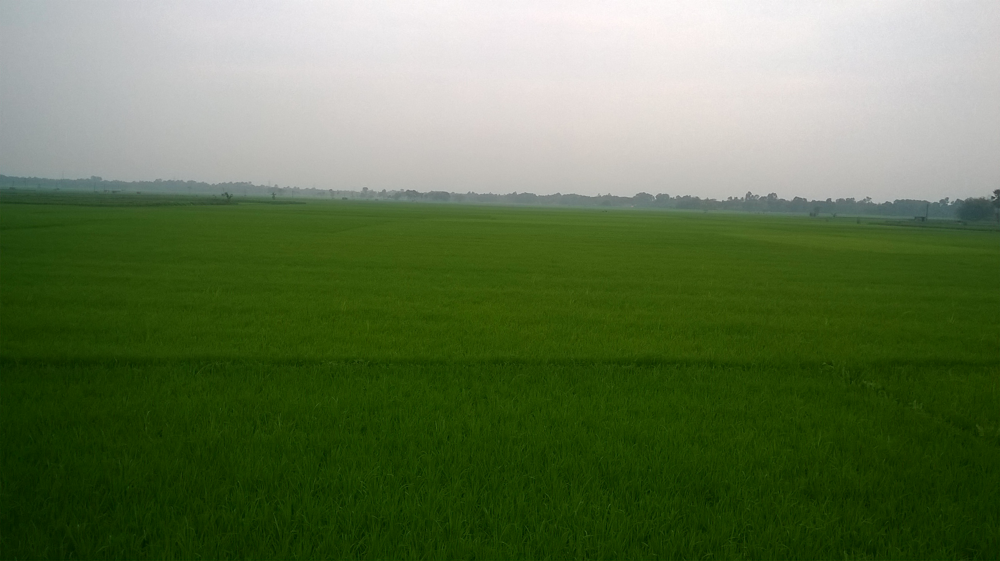
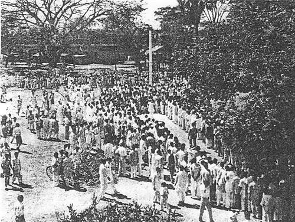
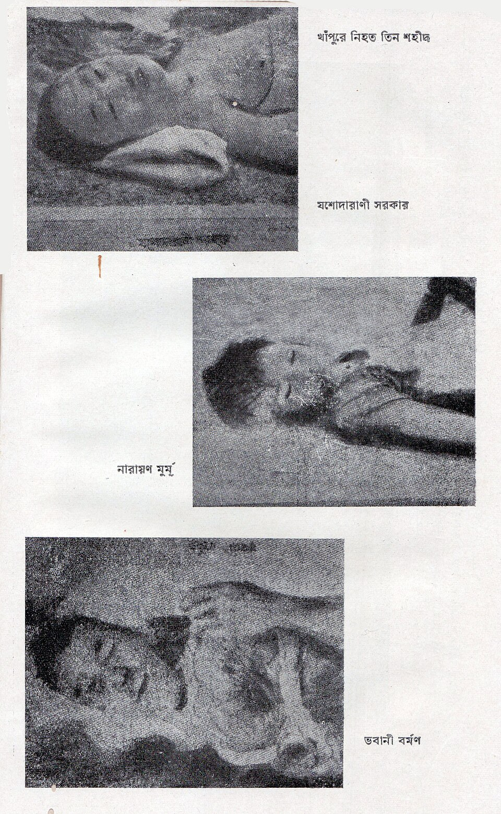
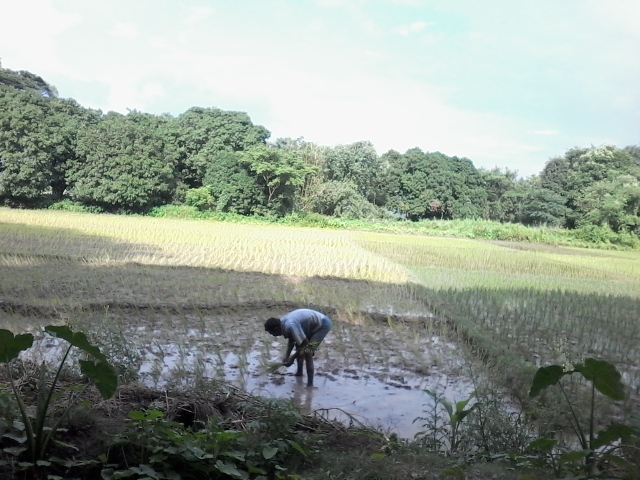
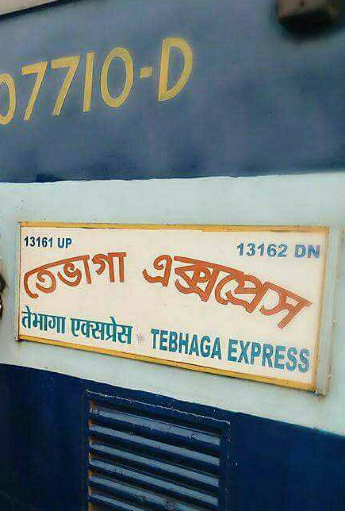

The Sharecropping Order
Under adhi, barga or bhag, the bargadar supplied seed, cattle and labour and still surrendered half the crop to the landowner — plus illegal cesses and interest that left most families always in debt.
"Adhi Noy, Tebhaga Chai" — Not half, but two-thirds.
On the eve of India's independence, the bargadars — the sharecroppers of Bengal — rose in the greatest peasant uprising the province had ever seen. Tilling the land of rich jotedars, they had always surrendered half their harvest. Now, in the winter of 1946, they refused. They would keep two-thirds of what they grew, store the paddy in their own granaries, and fight for it with their lives. This is the story of that harvest, the villages that exploded from Dinajpur to the Sundarbans, the women who marched in the Nari Bahini, and the martyrs who fell on the threshing floors of Bengal.
Why the paddy fields of Bengal — not its cities — became the stage for the last great peasant struggle of the Raj.
Bengal in the 1940s was the most densely cultivated countryside in India, and the most unequal. Beneath the absentee zamindars created by the Permanent Settlement of 1793 lay a shadow economy of tenants and under-tenants. At the bottom stood the bargadar — the sharecropper, known by different names in different regions as adhiar, bhagchashi or bargadar — who worked the land of another man under the system of adhi, barga or bhag. He bore the cost of seed, bullocks and toil, and at the harvest handed half of everything to the landowner, on top of a hundred illegal exactions — the abwabs — and the endless grip of debt.
In North Bengal the dominant class was the jotedar — rich peasants who controlled vast acreage, village markets, and moneylending, and who were often more powerful in the countryside than the far-off zamindars. The Bengal Famine of 1943, which had starved millions while grain flowed to war, had exposed the cruelty of this order. And a forgotten official report — the Floud Commission of 1938–40 — had already declared that sharecroppers deserved two-thirds of the harvest. That report had been shelved. In September 1946, the Bengal Provincial Kisan Sabha, the peasant front of the Communist Party of India, decided to make it real — by mass struggle.
Under adhi, barga or bhag, the bargadar supplied seed, cattle and labour and still surrendered half the crop to the landowner — plus illegal cesses and interest that left most families always in debt.
In North Bengal the jotedars — rich peasants who controlled land, markets and credit — dominated the villages. It was against them, more than the distant zamindars, that the bargadars rose.
The Bengal Famine killed over two million while landlords still demanded their share. The Communist Party's relief work in the Sundarbans and elsewhere won the peasantry's trust and sharpened its anger.
The Bengal Land Revenue Commission (1938–40) recommended that sharecroppers keep two-thirds of the crop. The report gathered dust — but it gave the demand of 1946 the force of official justice.
Tebhaga means 'three shares'. The movement demanded the harvest be divided into three parts: two for the sharecropper who tilled it, one for the landlord.
"The bargadar sows, the bargadar waters, the bargadar reaps — and yet he must hand half the harvest to the man who does nothing but own the land. Let the crop be shared three ways: two parts for the tiller, one for the landlord. And let the paddy lie in the sharecropper's own granary, not the jotedar's godown."
Under the old order, the harvested crop was carried straight to the jotedar's godown, and the sharecropper received whatever the landlord chose to return. The movement's sharpest innovation was to reverse this: harvest the paddy and take it to your own khamar — your own threshing floor and granary — then offer the landlord his third. The grain physically in peasant hands changed everything: it broke the jotedar's economic chokehold and made the demand a fact before any law was passed.
In 1938 the Government of Bengal appointed the Land Revenue Commission under Sir Francis Floud. Two years later it reported that the sharecropping system was ruinous and recommended that bargadars receive two-thirds of the produce — the exact formula of 'tebhaga'. Wartime governments buried the report. In 1946 the Kisan Sabha dusted it off and argued: we are not asking for revolution, we are asking that the state keep its own commission's promise. It was an argument the colonial order could not answer.
"Take the paddy to your own granary." The call that turned a legal demand into a countryside on the move.
"Brothers, the winter harvest is coming. This year do not carry your paddy to the jotedar's godown. Take it to your own threshing floor, store it in your own khamar. Let the landlord come for his share — one part in three, and not a grain more. Adhi noy, tebhaga chai."
Communist workers and students poured out of the towns into the villages of Dinajpur, Rangpur and the Sundarbans. They organised meetings and rallies, staged the folk theatres of pala-gaan and zarigan to teach the peasants their rights, and built kisan committees village by village. When the winter aman harvest ripened, the movement had its army: the bargadars themselves.
The struggle began in the paddy fields around Atwari in Dinajpur district, where bargadars cut the harvest and carried it to their own khamars. From Dinajpur it leapt to Rangpur, Jalpaiguri, Malda, Mymensingh, Jessore, Khulna, Midnapore and the 24 Parganas — nineteen districts of undivided Bengal. In many places the jotedars fled and parts of the countryside passed under the control of the Kisan Sabha.
In the strongest areas the peasants went further, declaring whole regions tebhaga elakas — liberated zones — and setting up tebhaga committees to govern them locally. Peasant squads, the dalams, armed with bows, arrows and spears, protected the harvest and briefly ran parallel administrations across parts of northern Bengal. For a few months, in the winter of 1946–47, the paddy fields belonged to the tillers.
The movement had no single leader — it was carried by a generation of kisan organizers across the districts, and above all by the peasants themselves.
A left-wing leader from Dinajpur who built the organizational spine of the movement in its epicentre — the district where the winter harvest of 1946 first exploded.
Spearheaded the most militant peasant mobilization in Kakdwip and the Sundarbans, which sustained the struggle in the 24 Parganas well into the post-independence years.
An iconic woman leader revered as 'Rani Ma' by the Santal peasantry of Nachole, who organized armed resistance groups and was hunted and imprisoned by the authorities.
A legendary communist organizer who mobilized tribal and sharecropping peasants along the Mymensingh border country, later a founder of the communist movement in Bangladesh.
A young organizer in the tea-garden country of Jalpaiguri during Tebhaga, whose experience of peasant struggle later shaped his theories of the Naxalite movement.
One of the principal leaders of the Bengal Provincial Kisan Sabha, he helped coordinate the province-wide call and the resistance to the police crackdown.
Secretary of the Dinajpur district Communist committee, he led the movement in its storm centre from the first khamar campaign to the firing at Khanpur.
A leader during Tebhaga who, decades later as a minister in West Bengal, recovered surplus land for the state — the movement's agrarian dream made law.
Jashodarani Sarkar — one of the women organizers of the Tebhaga Movement.
Wide participation of women was one of the defining characteristics of Tebhaga. Women formed the Nari Bahini — women's brigades — alongside the women's organisations of the time, acting as couriers between villages, sheltering activists, guarding the stored paddy and even facing the police armed with little more than brooms, sticks and powdered pepper.
Leaders such as Ila Mitra, Manikuntala Sen, Renu Chakravartty, Bimala Majhi and Jashodarani Sarkar emerged from these ranks. After the movement, authorities charged Bimala Majhi with no fewer than 140 offences for her organizing work — a measure of how much the women's brigades mattered.
From the tenancy laws of the nineteenth century to Operation Barga — the long arc of the sharecroppers' struggle.
Occupancy rights are granted to the jotedars, deepening layers of tenancy beneath them and hardening the divide between rich peasant-landlords and the landless bargadars who tilled their fields.
The peasant front of the Communist Party of India is founded at Lucknow. From its earliest days, the demand for tebhaga — a two-thirds share for sharecroppers — sits in its programme.
The Bengal Land Revenue Commission examines the sharecropping system and recommends that bargadars receive two-thirds of the produce. The report is never implemented.
Millions starve while grain is hoarded and exported for the war. The Communist Party's relief work wins the countryside's trust, and the famine becomes the memory behind the revolt.
The Bengal Provincial Kisan Sabha resolves to implement the Floud Commission's recommendation through mass struggle. Cadres fan out into the villages before the winter harvest.
Around Atwari in Dinajpur, bargadars cut the winter aman paddy and carry it to their own khamars. The movement spreads to nineteen districts; tebhaga elakas and committees emerge in the strongest areas.
At Talpukur village, Chirirbandar, Dinajpur, Samir Uddin — a Muslim adhiar — and Shivram Majhi, a Santal of the Hasda community, are killed. They become the first martyrs of Tebhaga.
Under the weight of the uprising, the Muslim League ministry of H. S. Suhrawardy publishes the Bengal Bargadars Temporary Regulation Bill in the Calcutta Gazette — conceding the two-thirds demand. Land-owning legislators force its withdrawal without a vote.
At Khanpur village, Dinajpur, police open fire on peasants gathered to resist the arrest of Kisan Sabha leaders. Around twenty-two fall — the bloodiest single day of the movement, remembered in the shrine of the Three Martyrs of Khanpur.
Bengal is divided. The movement's heartland of Dinajpur, Rangpur and Mymensingh falls in East Pakistan while the leadership sits in Calcutta; the partition disrupts the struggle and lets the state reassert control.
The struggle's persistence leads to the Bargadari Act, recognizing the sharecropper's right to two-thirds of the produce where he supplies inputs. Enacted on paper, it is barely implemented.
Under the Left Front government of West Bengal, surplus land is vested and distributed to the landless, and Operation Barga records the tenancy rights of sharecroppers — the Tebhaga demand finally written into the fields.
Undivided Bengal from the air — the districts where the movement burned hottest. Select a marker to explore the fields of struggle.
The state answered the harvest with police firings and mass arrests. The names the movement left behind became its memory.
The movement's first martyrs were Samir Uddin, a Muslim adhiar, and Shivram Majhi, a Santal of the Hasda community, both of Talpukur village in Chirirbandar. A Muslim and a tribal peasant, killed defending the same harvest, they came to symbolise the unity that made Tebhaga unlike the communal politics around it. On 29 March 1947, four Santal peasants were killed at Charu beel in Malda district — the tribals of the northern paddy country were among the movement's most militant and most punished participants.
When police came to arrest Kisan Sabha leaders at Khanpur, peasants massed to resist. The police opened fire on the crowd. Around twenty-two people were killed or fatally wounded — Rajbanshi and Muslim peasants alike — in what became the bloodiest single day of the movement. A memorial raised in their memory, the Three Martyrs of Khanpur, still stands in Dinajpur district as a shrine to the movement.
Samir Uddin and Shivram Majhi — a Muslim and a Santal — the first martyrs of the movement, December 1946.
The firing of 20 February 1947 cost some twenty-two lives and gave the movement its greatest shrine.
Four Santal peasants killed on 29 March 1947 — the tribal countryside paid a heavy price for its militancy.
Dozens of leaders and thousands of peasants were arrested; women organizers were singled out — Bimala Majhi alone faced 140 charges.
The movement never produced a single agreed toll, but it is remembered through its firings, its martyrs and its prison lists — from Talpukur and Khanpur in Dinajpur to Charu beel in Malda, and in the jails that filled after partition with peasant and women leaders. Yet the harvest the state tried to take back was already in the khamars. The landlords who recovered their paddy did so by force; the demand itself was never surrendered.
The winter of 1946 planted a demand that neither partition nor police firing could uproot — and that both Bengals eventually had to answer.
The movement's pressure produced the Bargadari Act of 1950 recognising the two-thirds share — and later land legislation in East Bengal — even if implementation lagged far behind the law.
See the wider march to 1947Partition split the movement's heartland between India and the new state of Pakistan — but Tebhaga's memory and its land-reform inheritance live on in both West Bengal and Bangladesh.
Explore the Partition of BengalFrom 1977 the Left Front government of West Bengal vested surplus land, distributed it to the landless, and recorded sharecroppers' tenancy rights under Operation Barga — Tebhaga's promise written onto the land.
Visit the Green Revolution explorerMuslim adhiars, Hindu bargadars and Santal and Rajbanshi peasants fought the same harvest together — a peasant unity that stood against the communal fires of 1946–47.
Visit the Freedom Fighters HubFrom Champaran and Bardoli to Tebhaga, the peasant struggles of the Raj were central to the making of independent India's democracy.
Visit the Freedom Movement ExplorerCharu Majumdar's organizing in the tea gardens of Jalpaiguri during Tebhaga fed directly into the later Naxalbari uprising — the movement's most radical echo.
Visit Making of Modern IndiaThe Tebhaga Movement did not end with a victory parade. It ended in firings, jails and a partition that divided its own heartland. But it made the sharecropper's two-thirds a fact in the khamars of Bengal, a clause in the statutes of both successor states, and a political memory that three generations of Indian democracy could not erase. When Operation Barga finally recorded the bargadar's name in West Bengal's land ledgers, it was completing a promise first made — and fought for — in the winter of 1946.
Fields, faces and memory — the images of the Tebhaga country and its people.





The commission reports, histories and records from which this account of the Tebhaga Movement is drawn.
Tebhaga Movement — the authoritative entry on the movement, its districts and its demands, from the national encyclopedia of Bangladesh. Read the entry
The Tebhaga Movement: Politics of Peasant Protest in Bengal 1946–1950, Aakar Books — the standard scholarly study of the movement's course and politics.
Report of the Land Revenue Commission, Bengal — the official report recommending that sharecroppers receive two-thirds of the produce, which the movement of 1946 sought to implement.
District Human Development Report: South 24 Parganas — documents the Tebhaga movement in the 24 Parganas, the Bargadari Act of 1950 and the later land reforms and Operation Barga.
Sharecropping and Sharecroppers' Struggles in Bengal, 1930–1950 — a close study of the sharecropping system and the movements against it, including Tebhaga.
Tebhaga movement — general reference for chronology, leadership, martyrs and the movement's impact in both Bengals.
Read the article